AgentForge closes the slowest loop in applied machine learning — the human staring at metrics, guessing whether to get more data, change the model, or reshape the features. The agent makes that call, one move per round, and every call is observable.
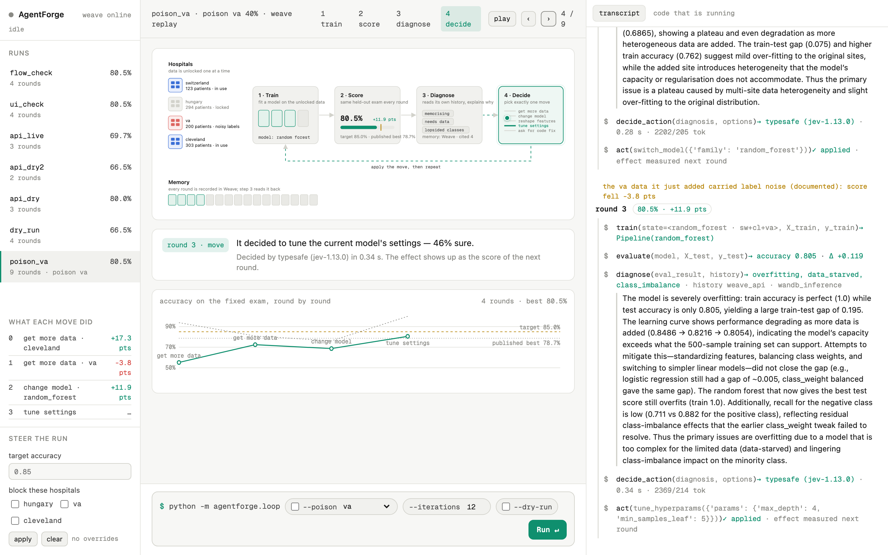
Imagine a student taking the same exam over and over. Between attempts they have to decide how to study better — read more material, change their method, or fix a bad habit. Usually a teacher decides that. Here, the student decides for themselves, and keeps a diary of why.
The "student" is a program trying to predict heart disease from patient measurements.
Each round it does four things:
Then it applies the move and goes again, until it beats 85% or admits it is stuck.
Result: on its own, it went from 55% to 87% in six rounds — better than the published score for this dataset, and almost as good as a human expert hand-tuning the model.
What you see on screen is a diagram of that loop with a dot moving between the steps, hospitals lighting up as they are unlocked, a gauge climbing toward the target, and one plain-English sentence per step, like "It scored 69.2% — that's 0.5 points worse than last round. It's only 21% sure what to do next, so it's asking for a second opinion."
The real point isn't that the number went up. It's that you can click any round and see exactly why it went up — and the same machinery tells you when it's stuck.
The task is deliberately small so the loop is the star: predict heart disease from 13 patient measurements, using public, anonymised data from four hospitals. A fixed 20% of every hospital is held out as the exam and never trained on. The agent starts with only the smallest, most skewed hospital (Switzerland, 123 patients, 93% positive) — where a model scores 55% by guessing "everyone is sick" — and must earn its way to 85%.
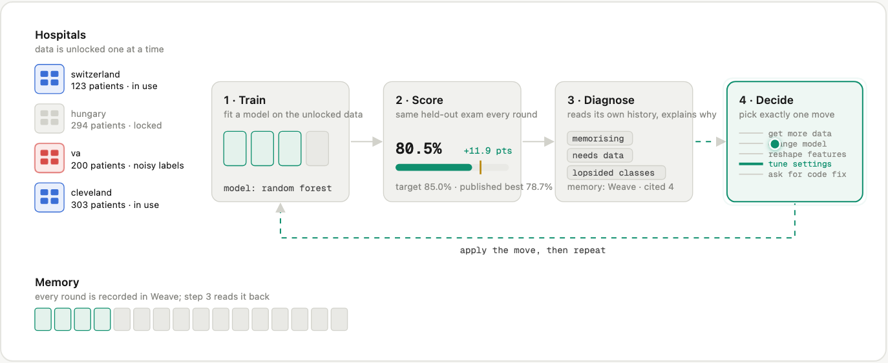
The move is applied, and the next round's score is the measured effect of that move — recorded in an effect ledger the agent can read. It stops when it beats the target, when three moves in a row do nothing, or when it runs out of rounds. Nothing is cherry-picked: same seed, same exam, every round.
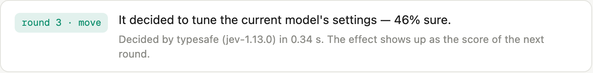
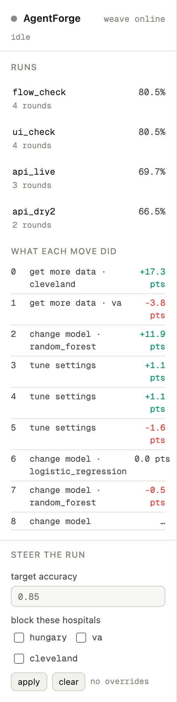
To make "memory" more than a slogan, one run secretly flips 40% of the labels in the VA hospital's training rows (test rows untouched, documented in the config and every log — the agent is simply not told). The question is whether it notices from its own results.
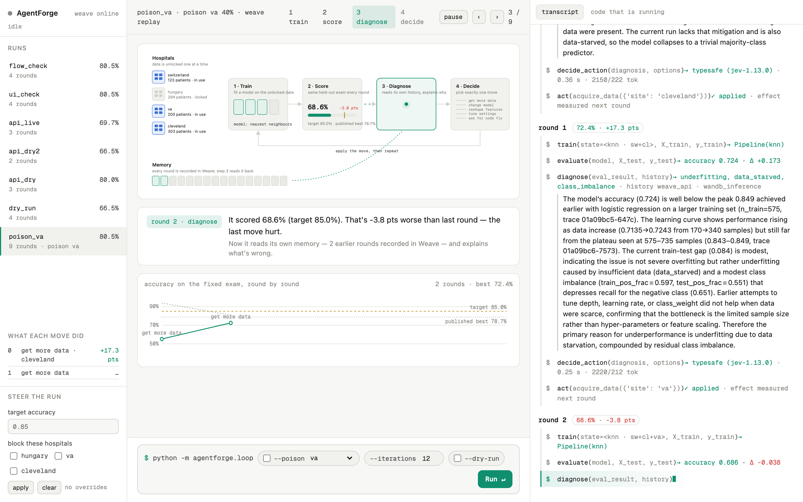
That run peaked at 82.7% and stopped honestly instead of pretending. Without the poison, the same loop beats 85% in four to eight rounds — the full round-by-round tables for both are in the results below.
Track: Best Use of Weave. Each tool has a job the loop cannot do without; each one's status below is what really ran during the hackathon.
@weave.op; one round is one navigable trace tree.evaluate/act calls through the Weave client (history.py) and the prompt asks the reasoning model to list the trace IDs it relied on — they appear in the trace and the lab report (cited_trace_ids), e.g. 01a09bc9-28d7-….weave.Evaluation (see results).openai/gpt-oss-120b through the OpenAI-compatible endpoint; strict JSON out, one repair retry, honest fallback labels if it fails."The model's test accuracy (0.686) is well below the earlier peak… Adding the VA site data caused a performance drop (0.724 → 0.686)…" — a real diagnosis from the poisoned run, citing two earlier traces.
jev-1.13.0) does not generate text; it answers typed Choice questions with probabilities. The action head asks one request with five independent questions — which kind of move, and speculative branches for which model, which feature op, which hospital, which tuning preset — and code assembles the pydantic-validated action. Free text never reaches act().notebook_writer.py appends one cell per round: the score, the effect of the last move, the diagnosis in the agent's words with cited traces, the decision with its probabilities, the cost.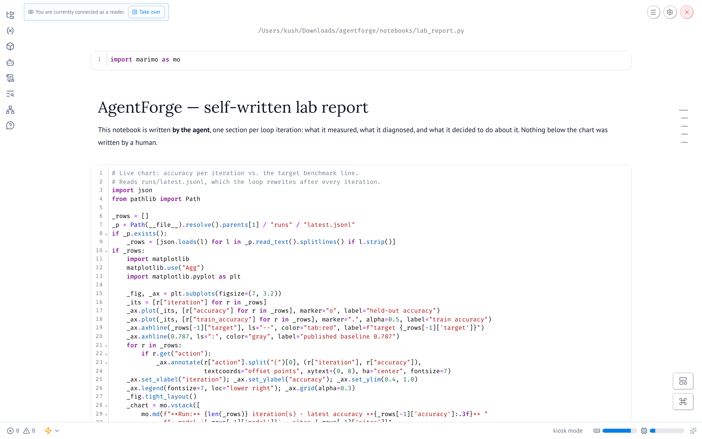
request_code_fix: a structured request (aria_requests/NNN.md) with the diagnosis, the failing trace IDs, and an acceptance test, asking for a new model family or feature op to be registered in extensions.py.NNN.applied lands, the loop reloads the module, re-runs the acceptance test, records who applied it (ARIA or manual-assisted) — and the new option appears in the agent's action space next round. The agent expands its own action space; the trace says who expanded it.920 patients from four hospitals. Before round 0, a stratified 20% of every hospital is set aside as the exam: 185 patients, 55% of them with disease. The exam never changes and is never trained on, so "guess everyone is sick" scores exactly 55.1% — that is the floor the agent starts on, with only Switzerland's 98 training rows (93% positive). The target is 85%; the best published single-hospital accuracy on this dataset is 78.7–83.3%.
For context, here is what a human-picked configuration scores on the same exam when handed all four hospitals at once (no agent involved):
| Hand-picked configuration, all 4 hospitals | Accuracy |
|---|---|
| k-nearest neighbours, raw features | 70.3% |
| k-nearest neighbours, standardised | 83.2% |
| logistic regression, standardised | 85.4% |
| random forest, defaults | 85.9% |
| random forest, tuned by hand (300 trees, depth 8) | 88.1% |
So the question the runs answer is not "can a model reach 85%" — it is whether an agent starting blind, with one bad hospital and a bad model, can find its way there on its own evidence, and whether every step of that is legible.
Six rounds, 3 min 25 s wall clock (the reasoning call dominates each round). Final 87.0%, above the target and above every hand-picked config except the hand-tuned forest.
| Round | Data · model | Score | Δ from last move | Train / gap | Diagnosis tags | Move (how sure) | Decision time |
|---|---|---|---|---|---|---|---|
| 0 | Switzerland · kNN | 55.1% | — | 93.9% / +0.387 | memorising, needs data, lopsided classes | unlock Cleveland (100%) | 0.30 s |
| 1 | +Cleveland · kNN | 72.4% | +17.3 pts | 80.9% / +0.084 | too simple, memorising, needs data | unlock VA (74%) | 0.28 s |
| 2 | +VA · kNN | 69.7% | −2.7 pts | 81.0% / +0.113 | memorising, needs data, lopsided, stuck | one-hot encode features (57%) | 0.21 s |
| 3 | same · kNN + one-hot | 69.2% | −0.5 pts | 80.8% / +0.116 | memorising, needs data, lopsided, stuck | gate fired (21%) → reasoning model overrode: switch to logistic regression | 0.25 s + 9 s |
| 4 | same · logistic regression | 84.9% | +15.7 pts | 81.6% / −0.033 | too simple, needs data, lopsided | unlock Hungary (52%) | 0.25 s |
| 5 | all four · logistic regression | 87.0% | +2.1 pts | 81.4% / −0.057 | — | target beaten, stop | — |
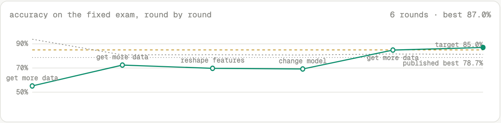
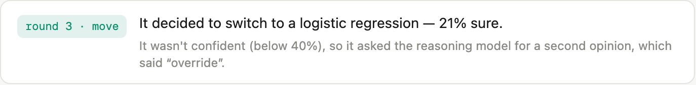
What happened in round 3, exactly. Two moves in a row had made things slightly worse. Jev's top choice was "get more data" at only 38%. The second opinion read the diagnosis and the effect ledger and wrote:
"The diagnosis identifies data scarcity and class imbalance as the primary issues. Acquiring additional Hungarian data has already been attempted repeatedly with minimal or negative impact… Switching to a model that is less prone to overfitting on small, imbalanced datasets — such as logistic regression with regularization — offers a more promising path."
The override was right on outcome: +15.7 points the next round, the largest single gain of the run. It was also partly wrong on facts — Hungary had not been acquired in this run. The agent's memory is the whole Weave project, so it was reading traces from earlier runs where Hungary had been tried. That is the honest shape of "memory is its own trace history": it works across runs, and it can conflate them. It is called out again under limitations.
Cost of the run. Five structured decisions by TypeSafe: mean 0.26 s, ~2,570 input / 210 output tokens each. Five diagnoses and one second opinion by W&B Inference: 7–12 s each. Every diagnosis cited between 2 and 5 earlier trace IDs. No dollar figures are reported because no price sheet was available; the loop reports "n/a" rather than a guess.
Same start, same exam, same agent — but the VA hospital's training rows carry 40% label noise (test rows untouched; documented in the config, the run header, every metrics row and every report section; the agent is not told). Nine rounds; best 82.7%; stopped by the plateau rule (three moves in a row with no gain).
| Round | Data · model | Score | Δ | Train / gap | Move (how sure) |
|---|---|---|---|---|---|
| 0 | Switzerland · kNN | 55.1% | — | 93.9% / +0.387 | unlock Cleveland (82%) |
| 1 | +Cleveland · kNN | 72.4% | +17.3 | 80.9% / +0.084 | unlock VA (85%) — the poisoned site |
| 2 | +VA (noisy) · kNN | 68.6% | −3.8 | 76.2% / +0.076 | switch to random forest (53%) |
| 3 | same · random forest | 80.5% | +11.9 | 100% / +0.195 | tune: shallower trees (46%) |
| 4 | same · RF regularised | 81.6% | +1.1 | 79.6% / −0.020 | tune: more capacity (81%) |
| 5 | same · RF 500 trees | 82.7% | +1.1 | 86.8% / +0.041 | tune: balanced classes (73%) |
| 6 | same · RF balanced | 81.1% | −1.6 | 88.6% / +0.075 | switch to logistic regression (74%) |
| 7 | same · logistic regression | 81.1% | 0.0 | 77.0% / −0.041 | gate fired (36%) → second opinion: accept "switch back to random forest" |
| 8 | same · random forest | 80.5% | −0.5 | 100% / +0.195 | switch to SVM (58%) — then plateau stop |
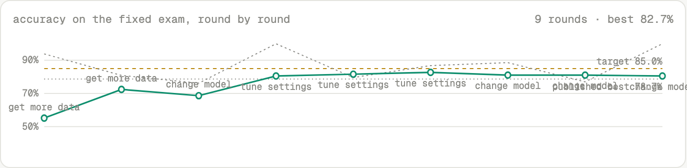
What the agent got right. Its own ledger recorded VA as the only acquisition that ever hurt (−3.8 pts), and the diagnosis in round 2 said so in words: "Adding the VA site data caused a performance drop (0.724 → 0.686, see trace 01a09bc9-28d7…)". Its confidence dropped from 85% to 53% on the very next decision. Settings it had already tried were withdrawn from its options, so the tuning sequence in rounds 3–5 never repeated itself. When it ran out of good ideas it stopped rather than pretend.
What it got wrong. It never unlocked Hungary — the one clean hospital left — and instead spent six rounds tuning and switching models around the noisy data. Model families are only marked as tried, not withdrawn (revisiting one can be legitimate after the data changes), so it went back to random forest twice. A stronger agent would have treated "the last acquisition hurt" as a reason to try the other acquisition, not to stop acquiring.
The nine recorded diagnoses of Run B were replayed through three decision heads inside a weave.Evaluation, so the comparison lives next to the runs in Weave. Each proposed move was scored by actually applying it: rebuild the recorded state, apply the move, retrain on the same fixed split, measure the change in held-out accuracy.
| Head | Valid typed action | Agrees with the live run | Mean counterfactual Δ accuracy | Mean latency | Mean tokens |
|---|---|---|---|---|---|
| rules (heuristic baseline) | 9/9 | 5/9 | +0.054 | 0.00 s | 0 |
| TypeSafe Jev 1.13 | 9/9 | 8/9 | +0.046 | 0.35 s | 2,469 |
| W&B Inference gpt-oss-120b | 9/9 | 5/9 | +0.038 | 7.19 s | 2,482 |
Scorers. Valid typed action: the head itself produced a pydantic-valid action without falling back (the script prints a warning if any head silently degrades to the rules — an earlier version of this table was wrong for exactly that reason, and was corrected). Agrees with the live run: same kind of move the live loop took (Jev made those decisions, so 8/9 is expected consistency, not superiority). Counterfactual Δ: the real held-out change from applying the proposed move. Latency and tokens: per decision.
Honest read. With nine samples the Δ differences are within noise; on a small tabular problem a rule-based baseline is competitive. What is not noise: the structured head is ~20× faster than the reasoning model at the same token cost, never needs a parse-and-retry loop, and gives a calibrated probability on every option — which is what makes the confidence gate possible at all.
AgentForge is a closed train → score → diagnose → decide loop whose every step is a typed, traced, measurable event. Two LLMs share the work by strength: a reasoning model explains and, when asked, arbitrates; a structured-decision model picks one move in a third of a second with a probability on each option. The agent's memory is its own trace history, and the memory is binding — options shown useless disappear. On a deliberately small problem it goes from a majority-class guess to 87% without a human, and when we poison a data source it notices from its own results, hedges, and stops rather than pretend. What is stubbed is stated: the ARIA code-fix path is built but has not executed a live fix, and history is project-wide by choice.
If you take one thing away: the interesting part is not that the number went up. It is that you can click any round and see exactly why it went up — the evidence, the diagnosis, the probabilities, the override — and that the same machinery told us when it was stuck.
python -m agentforge.loop --dry-run runs the whole loop offline with a rule-based brain, and must pass before every commit (71 tests).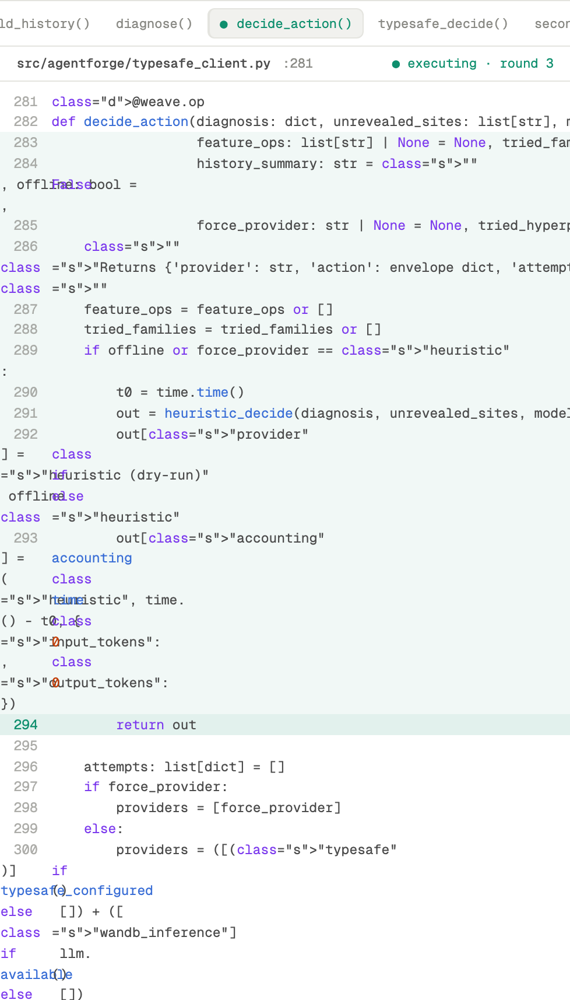
inspect.getsource, highlighted while it executes.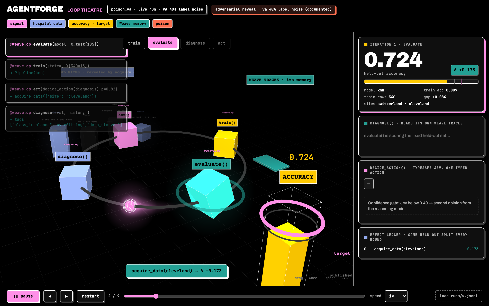
demo/loop3d.html), kept as a standalone page.